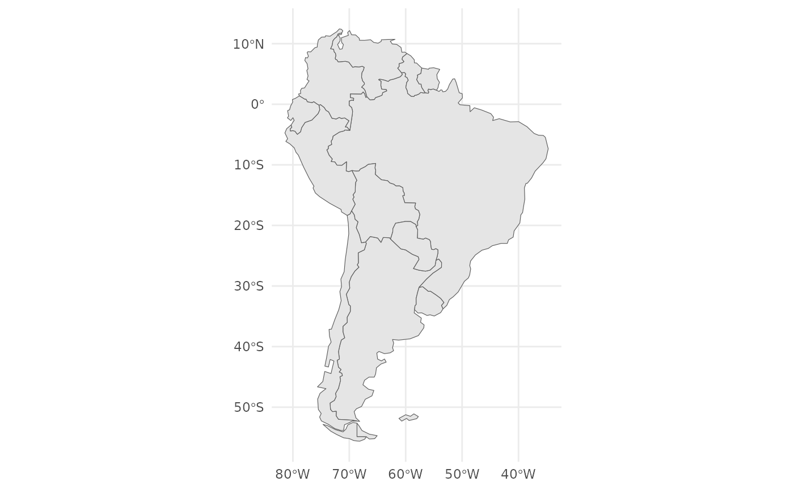
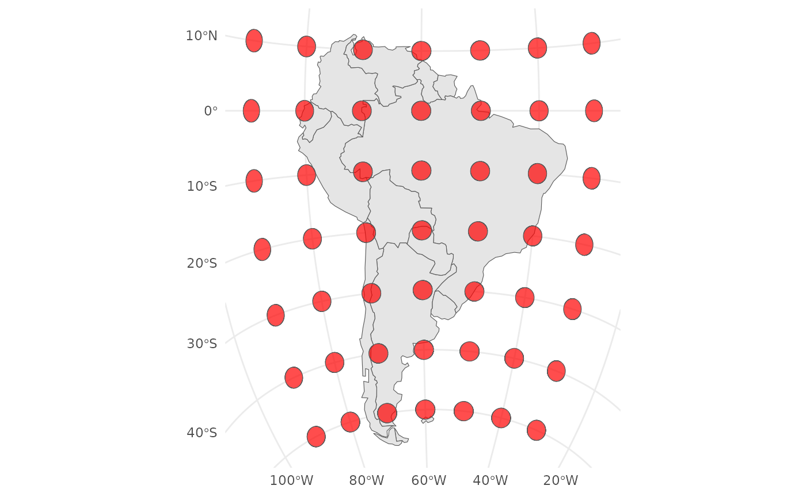
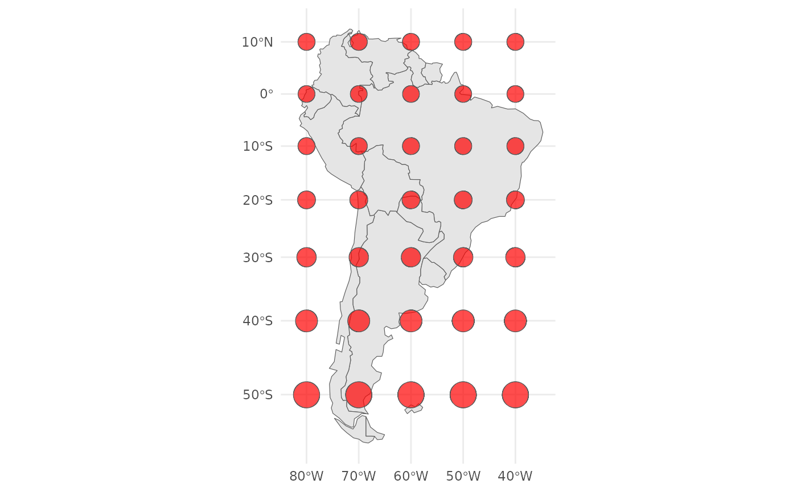
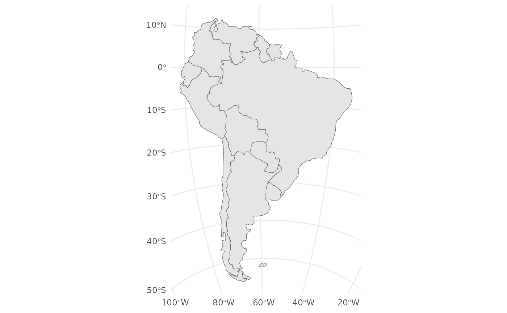
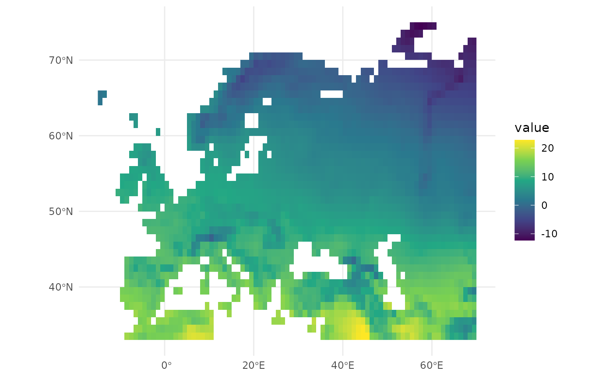
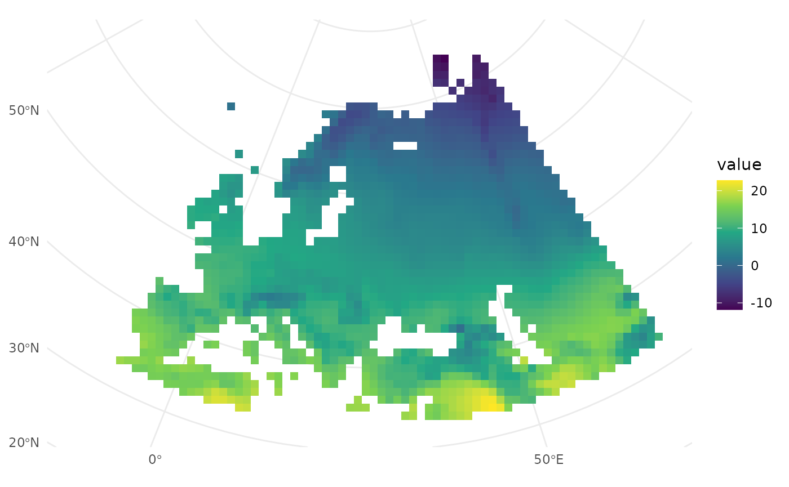
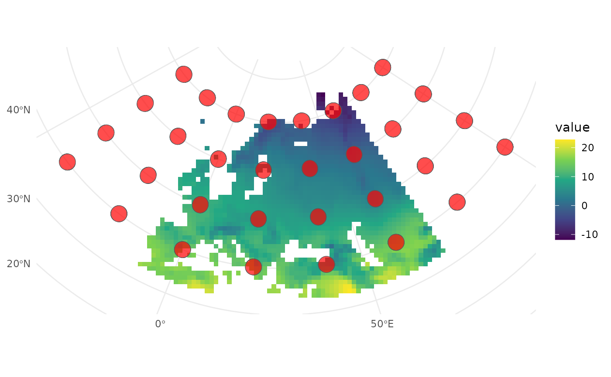
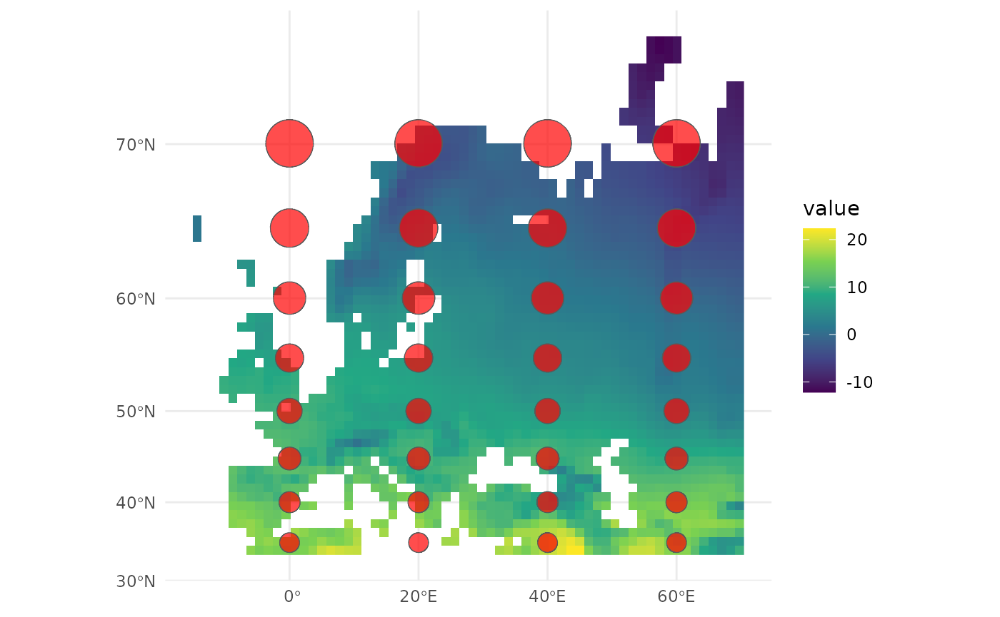
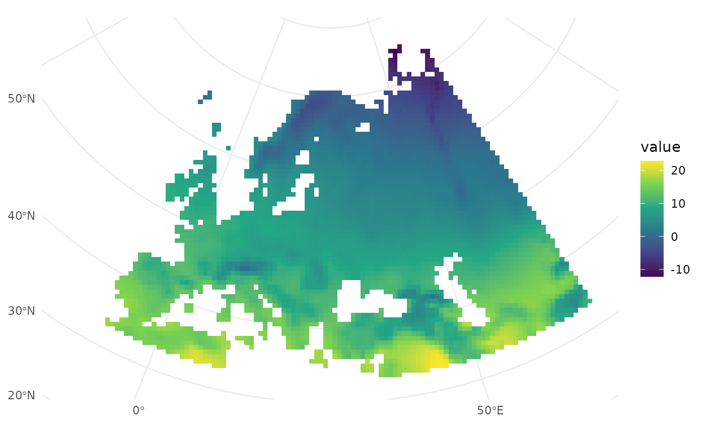

crstools
crstools.Rmdcrstools is a collection of tools to facilitate the
choice of a Coordinate Reference System (CRS) in R. CRSs are essential
for mapping, as they define how geographic data are projected onto a
flat surface. The choice of CRS depends on the type of map, the extent
of the map, and the purpose of the map. The crstools
package provides 3 main functionalities:
suggest_crsprovides suggestions for CRS for different types of maps, such as equal-area maps, conformal maps, and equidistant maps, depending on the extent and location of the area of interest.geom_tissotvisualises the distortion associated with a given crs, by adding Tissot indicatrix to aggplot2map (the distortion of circles on the map).add_crshelps to add CRS to an image; it does so by defining Ground Control Points (GCPs) and using GDAL to warp the image to a desired CRS.
Installation
Currently, crstools is only available on GitHub. You can
install it using the devtools package:
devtools::install_github("EvolEcolGroup/crstools")An overview of CRS codes
Coordinate Reference System (CRS) codes are standardized identifiers used to define spatial reference systems, ensuring accurate geospatial data representation. One common way to describe a CRS is using Well-Known Text (WKT), a human-readable format that specifies key parameters such as the datum, projection, and coordinate units. Another widely used system is the EPSG code, which is a numeric identifier assigned by the European Petroleum Survey Group (EPSG) for commonly used CRS definitions, such as EPSG:4326 for WGS 84. Additionally, Proj4 is a text-based format used by the PROJ library, which provides concise parameter strings for defining projections, transformations, and datums, making it particularly useful in GIS software and programming environments. These different formats help ensure interoperability between geospatial tools and datasets.
Let’s take the Web Mercator projection, commonly used in web mapping applications like Google Maps and OpenStreetMap. Below are its representations in WKT, EPSG, and Proj4 formats:
-
EPSG Code
- EPSG:3857 (also called “Pseudo-Mercator” or “Web Mercator”)
-
Well-Known Text (WKT)
PROJCS["WGS 84 / Pseudo-Mercator", GEOGCS["WGS 84", DATUM["WGS_1984", SPHEROID["WGS 84",6378137,298.257223563, AUTHORITY["EPSG","7030"]], AUTHORITY["EPSG","6326"]], PRIMEM["Greenwich",0, AUTHORITY["EPSG","8901"]], UNIT["degree",0.0174532925199433, AUTHORITY["EPSG","9122"]], AUTHORITY["EPSG","4326"]], PROJECTION["Mercator_1SP"], PARAMETER["central_meridian",0], PARAMETER["scale_factor",1], PARAMETER["false_easting",0], PARAMETER["false_northing",0], UNIT["metre",1, AUTHORITY["EPSG","9001"]], AXIS["X",EAST], AXIS["Y",NORTH], AUTHORITY["EPSG","3857"]] -
Proj4 String
+proj=merc +a=6378137 +b=6378137 +lat_ts=0 +lon_0=0 +x_0=0 +y_0=0 +k=1 +units=m +nadgrids=@null +wktext +no_defs
Each of these formats represents the same Web Mercator projection, allowing different GIS tools and libraries to interpret and use the coordinate system consistently.
In general, WKT is the most complete and flexible format,
representing any possible CRS; EPSG codes are standardized and
widely recognized, but only cover a limited number of possibilities; and
Proj4 string are concise and easy to use in programming
environments, but may not cover all possible options. Since in
crstools we attempt to provide a wide range of CRS options,
we use the WKT and Proj4 format for the CRS
suggestions.
Spatial objects in R
In R, the sf (Simple Features) package is widely used
for handling vector geographic data, such as points, lines, and
polygons. It provides an efficient and standardized way to work with
spatial data using the simple features model, allowing
seamless integration with the tidyverse and modern spatial
workflows. The sf package supports various spatial
operations, including transformations, intersections, and aggregations,
while also providing compatibility with the system libraries
GDAL, PROJ, and GEOS for advanced spatial analysis. For
raster data, the terra package is the preferred choice,
offering a powerful and efficient framework for handling large raster
datasets. terra is designed to replace the older
raster package, providing better performance and memory
management for processing multi-layer rasters, reprojecting, cropping,
and performing raster algebra. Together, sf and
terra enable a comprehensive geospatial analysis workflow
in R, ensuring smooth interoperability between vector and raster
data.
sf and terra each have their own functions
to query and set CRS: sf::st_crs() and
terra::crs(), respectively. These functions allow you to
access and modify the CRS of spatial objects, ensuring that your data is
correctly projected and aligned for spatial analysis. To avoid confusion
between the two packages, in this vignette we will use the convention of
giving the package name before the function name, such as
sf::st_crs() and terra::crs().
Note that vector data can also be represented in terra
with the SpatVector class, and raster data can be
represented in sf with the stars class (via
the stars package). These two options are less used, but
they can each be queried by terra::crs() and
sf::st_crs() depending on the package they belong to;
crstools can handle these objects as well.
Choosing a CRS
The suggest_crs() function provides suggestions for CRS
for different types of maps. The function takes the extent of the map
and the type of distortion as inputs and returns a CRS (or a list of
CRSs if more than one option is available). There are 3 types of
distortion: equal area, conformal, and
equidistant. As suggested by the name, equal-area maps preserve
the area of features, conformal maps preserve angles, and equidistant
maps preserve distances. A fourth option, compromise, is also
available, which tries to balance the trade-offs between the other three
types of distortion.
The choice of CRS depends on the extent of the map. Let us use South
America as an example. We will use rnaturalearth to get a
map of that continent, as an sf object (sf is
generally used for ):
library(rnaturalearth)
library(sf)
#> Linking to GEOS 3.12.1, GDAL 3.8.4, PROJ 9.4.0; sf_use_s2() is TRUE
s_america_sf <- ne_countries(continent = "South America", returnclass = "sf")We use ggplot2 to visualise it:
library(ggplot2)
ggplot() +
geom_sf(data = s_america_sf) +
theme_minimal()
Let us check the CRS for this object:
sf::st_crs(s_america_sf)
#> Coordinate Reference System:
#> User input: WGS 84
#> wkt:
#> GEOGCRS["WGS 84",
#> DATUM["World Geodetic System 1984",
#> ELLIPSOID["WGS 84",6378137,298.257223563,
#> LENGTHUNIT["metre",1]]],
#> PRIMEM["Greenwich",0,
#> ANGLEUNIT["degree",0.0174532925199433]],
#> CS[ellipsoidal,2],
#> AXIS["latitude",north,
#> ORDER[1],
#> ANGLEUNIT["degree",0.0174532925199433]],
#> AXIS["longitude",east,
#> ORDER[2],
#> ANGLEUNIT["degree",0.0174532925199433]],
#> ID["EPSG",4326]]Note that, by default, sf gives us the CRS in WKT
format. At the very bottom, you can see that, as this is a standard CRS,
the EPSG code is also given. If we want to see the Proj4 code, we can
use the sf::st_crs() and extract the
$proj4string slot:
sf::st_crs(s_america_sf)$proj4string
#> [1] "+proj=longlat +datum=WGS84 +no_defs"Now, let’s use suggest_crs() to get a suggestion for an
equal-area CRS for this map:
library(crstools)
s_am_equal_area <- suggest_crs(s_america_sf, distortion = "equal_area")
#> To reduce overall distortion on the map, one can also compress the map in the north-south direction (with a factor s) and expand the map in the east-west direction (with a factor 1 / s). The factor s can be determined with a trial-and-error approach comparing the distortion patterns along the centre and at the border of the map.The function returns a list with two elements: proj4 and
wkt. Let’s see:
s_am_equal_area
#> $proj4
#> [1] "+proj=tcea +lon_0=-58.070468 +datum=WGS84 +units=m +no_defs"
#>
#> $wkt
#> [1] "PROJCS[\"ProjWiz_Custom_Transverse_Cylindrical_Equal_Area\",GEOGCS[\"GCS_WGS_1984\",DATUM[\"D_WGS_1984\",SPHEROID[\"WGS_1984\",6378137.0,298.257223563]],PRIMEM[\"Greenwich\",0.0],UNIT[\"Degree\",0.0174532925199433]],PROJECTION[\"Transverse_Cylindrical_Equal_Area\"],PARAMETER[\"False_Easting\",0.0],PARAMETER[\"False_Northing\",0.0],PARAMETER[\"Central_Meridian\",-58.070468],PARAMETER[\"Scale_Factor\",1.0],PARAMETER[\"Latitude_Of_Origin\",0.0],UNIT[\"Meter\",1.0]]"
#>
#> $description
#> [1] "Transverse cylindrical equal-area"
#>
#> $notes
#> [1] "Equal-area projection for regional maps with a north-south extent"We can now use this CRS to reproject the map. We can quickly inspect the projection by plotting the map with the new CRS:
ggplot() +
geom_sf(data = s_america_sf) +
coord_sf(crs = s_am_equal_area$proj4) +
theme_minimal()
The Tissot indicatrix is a mathematical contrivance used in
cartography to characterize local distortions due to map projection. The
geom_tissot() function adds Tissot’s indicatrix to a map,
showing how circles are distorted by the projection. Let’s use it to add
Tissot’s indicatrix to the map of South America with the equal-area
projection:
ggplot(data = s_america_sf) +
geom_sf() +
geom_tissot() +
coord_sf(crs = s_am_equal_area$proj4) +
theme_minimal()
Let us compare this to a simple Mercator projection:
ggplot(data = s_america_sf) +
geom_sf() +
geom_tissot() +
coord_sf(crs = "+proj=merc") +
theme_minimal()
We can see how the area of the circles is distorted in the Mercator projection as we move further away from the equator, while the equidistant projection preserves the area of the circles better.
We could use the CRS to also project the sf object, and
check that the new CRS was indeed adopted:
s_america_sf_equal_area <- sf::st_transform(s_america_sf, s_am_equal_area$proj4)
sf::st_crs(s_america_sf_equal_area)$proj4string
#> [1] "+proj=tcea +lat_0=0 +lon_0=-58.070468 +k=1 +x_0=0 +y_0=0 +datum=WGS84 +units=m +no_defs"Now we can plot it, and the new CRS will be used automatically:
ggplot() +
geom_sf(data = s_america_sf_equal_area) +
theme_minimal()
We can do the same with a raster object. We’ll use a raster from the
package pastclim, which allows the easy retrieval of
climate data. First, ensure pastclim is installed and the
data_path is set, using set_data_path().
Let’s get the annual mean temperature (variable “bio01”) for Europe:
library(terra)
#> terra 1.8.80
library(pastclim)
# get example dataset from cran
set_data_path(on_CRAN = TRUE)
#> [1] TRUE
europe_r <- region_slice(
time_bp = 0,
bio_variables = c("bio01"),
dataset = "Example",
ext = region_extent$Europe
)A quick summary of the object gives the CRS, as “coord. ref.”:
europe_r
#> class : SpatRaster
#> size : 42, 85, 1 (nrow, ncol, nlyr)
#> resolution : 1, 1 (x, y)
#> extent : -15, 70, 33, 75 (xmin, xmax, ymin, ymax)
#> coord. ref. : lon/lat WGS 84 (CRS84) (OGC:CRS84)
#> source(s) : memory
#> varname : bio01 (annual mean temperature)
#> name : bio01
#> min value : -12.31051
#> max value : 22.81540
#> unit : degrees Celsius
#> time (years): 1950We can inspect in more detail the CRS for a terra object with:
terra::crs(europe_r)
#> [1] "GEOGCRS[\"WGS 84 (CRS84)\",\n DATUM[\"World Geodetic System 1984\",\n ELLIPSOID[\"WGS 84\",6378137,298.257223563,\n LENGTHUNIT[\"metre\",1]]],\n PRIMEM[\"Greenwich\",0,\n ANGLEUNIT[\"degree\",0.0174532925199433]],\n CS[ellipsoidal,2],\n AXIS[\"geodetic longitude (Lon)\",east,\n ORDER[1],\n ANGLEUNIT[\"degree\",0.0174532925199433]],\n AXIS[\"geodetic latitude (Lat)\",north,\n ORDER[2],\n ANGLEUNIT[\"degree\",0.0174532925199433]],\n USAGE[\n SCOPE[\"unknown\"],\n AREA[\"World\"],\n BBOX[-90,-180,90,180]],\n ID[\"OGC\",\"CRS84\"]]"which gives a WKT.
We can ask for the “Proj4” string with:
terra::crs(europe_r, proj = TRUE)
#> [1] "+proj=longlat +datum=WGS84 +no_defs"There is also a parameter “describe” which returns the EPSG code.
Let’s plot it with ggplot2, using tidyterra
to visualise the raster:
library(tidyterra)
#>
#> Attaching package: 'tidyterra'
#> The following object is masked from 'package:stats':
#>
#> filter
ggplot() +
geom_spatraster(data = europe_r) +
scale_fill_viridis_c(na.value = "transparent") +
theme_minimal()
We can now ask for a suggestion for an equal-area projection for this raster:
europe_r_equal_area <- suggest_crs(europe_r, distortion = "equal_area")
europe_r_equal_area
#> $proj4
#> [1] "+proj=aea +lon_0=27.5 +lat_1=40 +lat_2=68 +lat_0=54 +datum=WGS84 +units=m +no_defs"
#>
#> $wkt
#> [1] "PROJCS[\"ProjWiz_Custom_Albers\",GEOGCS[\"GCS_WGS_1984\",DATUM[\"D_WGS_1984\",SPHEROID[\"WGS_1984\",6378137.0,298.257223563]],PRIMEM[\"Greenwich\",0.0],UNIT[\"Degree\",0.0174532925199433]],PROJECTION[\"Albers\"],PARAMETER[\"False_Easting\",0.0],PARAMETER[\"False_Northing\",0.0],PARAMETER[\"Central_Meridian\",27.5],PARAMETER[\"Standard_Parallel_1\",40],PARAMETER[\"Standard_Parallel_2\",68],PARAMETER[\"Latitude_Of_Origin\",54],UNIT[\"Meter\",1.0]]"
#>
#> $description
#> [1] "Albers equal-area conic"
#>
#> $notes
#> [1] "Equal-area projection for regional maps with an east-west extent"Let’s use it:
ggplot() +
geom_spatraster(data = europe_r) +
scale_fill_viridis_c(na.value = "transparent") +
coord_sf(crs = europe_r_equal_area$proj4) +
theme_minimal()
Let us use the Tissot indicatrix to assess how effective the equal area projection is:
ggplot() +
geom_spatraster(data = europe_r) +
scale_fill_viridis_c(na.value = "transparent") +
geom_tissot(data = europe_r) +
coord_sf(crs = europe_r_equal_area$proj4) +
theme_minimal()
Comparing it to the Mercator projection:
ggplot() +
geom_spatraster(data = europe_r) +
scale_fill_viridis_c(na.value = "transparent") +
geom_tissot(data = europe_r) +
coord_sf(crs = "+proj=merc") +
theme_minimal()
We can also use the CRS to reproject the raster, and check that it has been applied correctly:
europe_r_equal_area <- terra::project(europe_r, europe_r_equal_area$proj4)
terra::crs(europe_r_equal_area, proj = TRUE)
#> [1] "+proj=aea +lat_0=54 +lon_0=27.5 +lat_1=40 +lat_2=68 +x_0=0 +y_0=0 +datum=WGS84 +units=m +no_defs"If we now plot the raster, the CRS is automatically added:
ggplot() +
geom_spatraster(data = europe_r_equal_area) +
scale_fill_viridis_c(na.value = "transparent") +
theme_minimal()